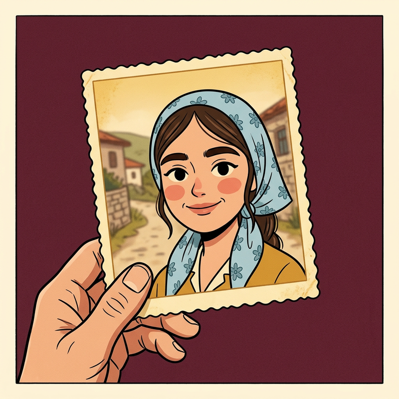

Sararmış Fotoğraf
1965'ten 2005'e bir ailenin hikâyesi
Sararmış Fotoğraf, Türkiye'nin 1965'ten 2005'e uzanan gündelik hayatını kurgusal bir ailenin gözünden anlatan resimli bir video dizisidir. Görücü usulü evlilikten köyden şehre göçe, mahallenin ilk televizyonundan eve giren ilk cep telefonuna kadar her bölüm bir yılı anlatır.
Bölümler YouTube, Instagram, Facebook ve Threads'te yayınlanır.